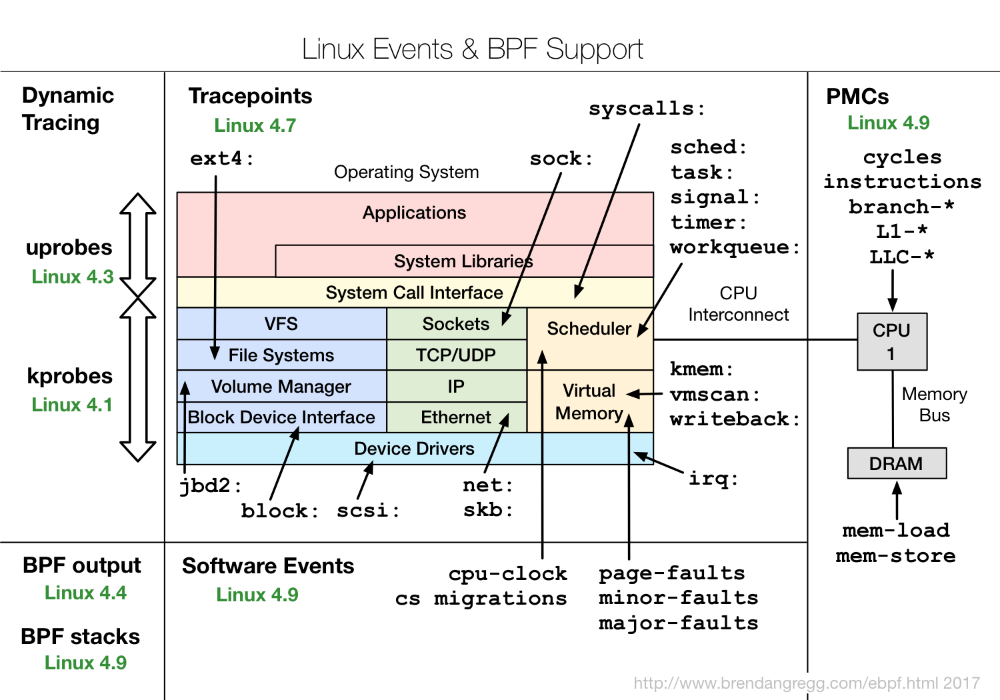
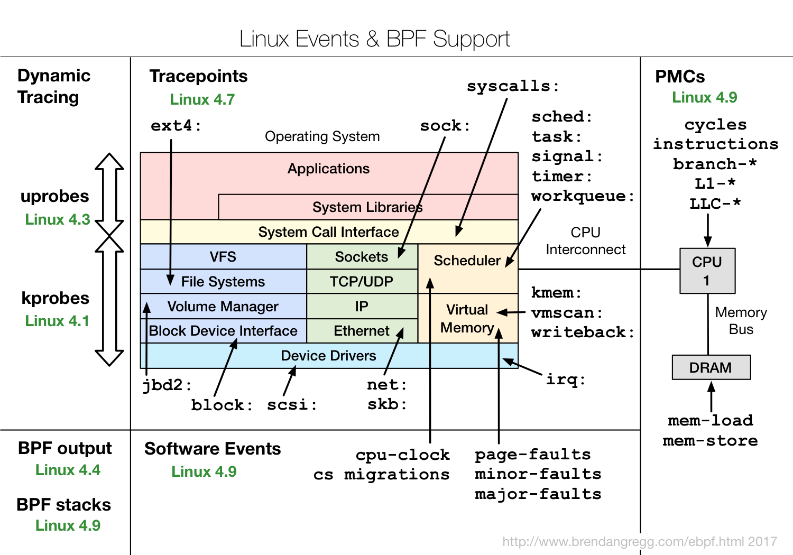
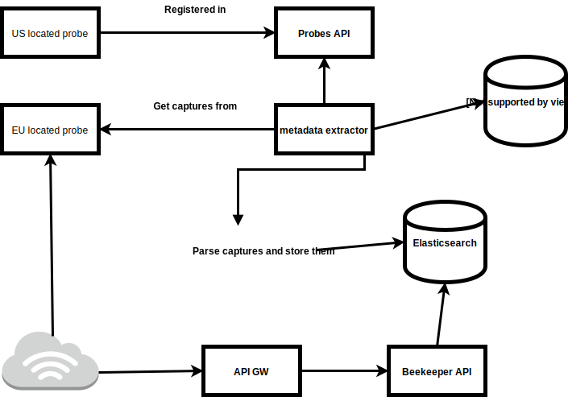

Honeypotting like a sir!
a story of laziness, incompetence and some infosec
Goals
- Build a high interaction honeypot framework using containers, getting information without modifying application code.
- Warning!: This is a personal project not a Schibsted one
- This method could be used for any applycation but i thought SSH would be the easier and more attractive to start with.
About me
- I moved here 5 years ago, leaving behind awful landscapes for nicer ones
- I never completed my degree because a final project is required. When i moved here, i thought i would have done it in 3 months.
- 5 years later, I finally started to do it.


Enough bullshit, prove it
- Drop your ssh keys, ssh-add -D.
- and ssh here ssh user@srv01.superprivyhosting.com
The search for getting audit info from containers
Use the auditd kernel subsystem, battle-tested tool (since 2.6.x kernels ).

No cgroups and namespaces support :-(
The search for getting audit info from containers
Use new eBPF system with bcc.
 

{kind=link}
Promising, but too soon, complex :-(
The search for getting audit info from containers
I needed events directly from source, a kernel module.
sysdig does precisely this.
sysdig launched falco while i was trying to create the same concept ;D.
Probe architecture

Probe threat model
- I expose vulnerable software to Internet.
- but runs in a container, that contains things, right?
- Worst case scenario? attacker pown the container through kernel.
The sad :-( state of linux security
- grsecurity/PaX
- KSPP
- AppArmor
- SELinux
- seccomp more details here
Collector architecture
Some technical learnings
- Pinning versions saved
my assme several times. Remember when docker renamed to docker-ce and then moby? - Think about your container workload and choose docker storage wisely, using AUFS with several containers maked my docker daemon slow and unstable
- make it happen, and then make it pretty (i didn't did the pretty part yet) and barely the happen part
Some psychological learnings
- This whole project was driven through extreme economical efficiency (i'm paying it)...
- and extreme timing constraints (hard deadline it's september 2017)...
- it changed me, and made me a better engineer here at Schibsted.